2023 Advanced Higher Chemistry marking instructions
Source: Scottish Qualifications Authority (SQA) / Qualifications Scotland. This is a StemInteract HTML companion, not an official HTML edition. Selectable text is supplied alongside original page images. Use the images or original PDF for equations, powers, fractions, vector notation, tables and diagrams; text extraction cannot fully preserve mathematical layout.
Jump to a question
PDF page 1
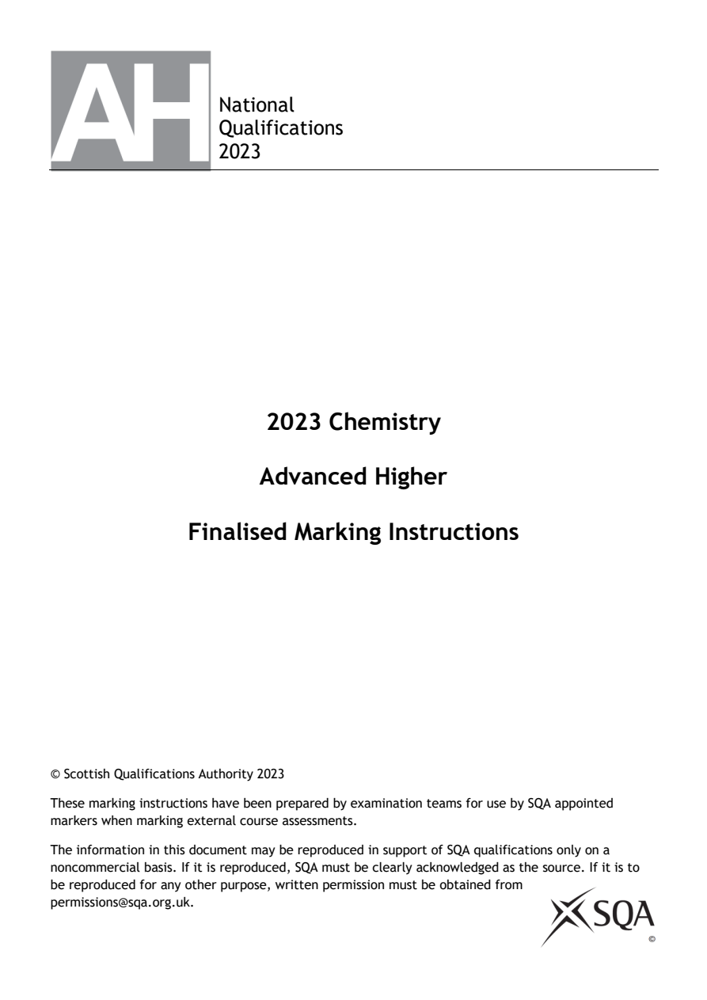
Selectable page text
National
Qualifications
2023
2023 Chemistry
Advanced Higher
Finalised Marking Instructions
© Scottish Qualifications Authority 2023
These marking instructions have been prepared by examination teams for use by SQA appointed
markers when marking external course assessments.
The information in this document may be reproduced in support of SQA qualifications only on a
noncommercial basis. If it is reproduced, SQA must be clearly acknowledged as the source. If it is to
be reproduced for any other purpose, written permission must be obtained from
permissions@sqa.org.uk.PDF page 2
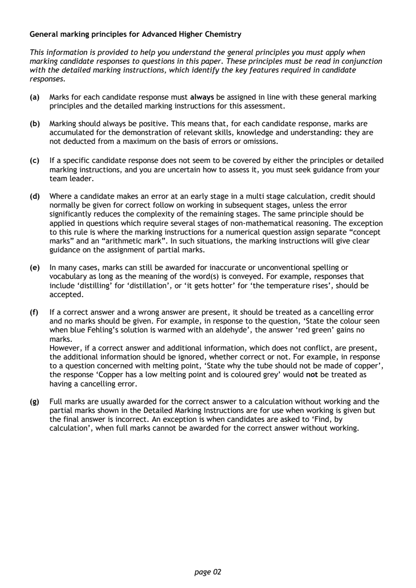
Selectable page text
General marking principles for Advanced Higher Chemistry
This information is provided to help you understand the general principles you must apply when
marking candidate responses to questions in this paper. These principles must be read in conjunction
with the detailed marking instructions, which identify the key features required in candidate
responses.
(a) Marks for each candidate response must always be assigned in line with these general marking
principles and the detailed marking instructions for this assessment.
(b) Marking should always be positive. This means that, for each candidate response, marks are
accumulated for the demonstration of relevant skills, knowledge and understanding: they are
not deducted from a maximum on the basis of errors or omissions.
(c) If a specific candidate response does not seem to be covered by either the principles or detailed
marking instructions, and you are uncertain how to assess it, you must seek guidance from your
team leader.
(d) Where a candidate makes an error at an early stage in a multi stage calculation, credit should
normally be given for correct follow on working in subsequent stages, unless the error
significantly reduces the complexity of the remaining stages. The same principle should be
applied in questions which require several stages of non-mathematical reasoning. The exception
to this rule is where the marking instructions for a numerical question assign separate “concept
marks” and an “arithmetic mark”. In such situations, the marking instructions will give clear
guidance on the assignment of partial marks.
(e) In many cases, marks can still be awarded for inaccurate or unconventional spelling or
vocabulary as long as the meaning of the word(s) is conveyed. For example, responses that
include ‘distilling’ for ‘distillation’, or ‘it gets hotter’ for ‘the temperature rises’, should be
accepted.
(f) If a correct answer and a wrong answer are present, it should be treated as a cancelling error
and no marks should be given. For example, in response to the question, ‘State the colour seen
when blue Fehling’s solution is warmed with an aldehyde’, the answer ‘red green’ gains no
marks.
However, if a correct answer and additional information, which does not conflict, are present,
the additional information should be ignored, whether correct or not. For example, in response
to a question concerned with melting point, ‘State why the tube should not be made of copper’,
the response ‘Copper has a low melting point and is coloured grey’ would not be treated as
having a cancelling error.
(g) Full marks are usually awarded for the correct answer to a calculation without working and the
partial marks shown in the Detailed Marking Instructions are for use when working is given but
the final answer is incorrect. An exception is when candidates are asked to ‘Find, by
calculation’, when full marks cannot be awarded for the correct answer without working.
page 02PDF page 3
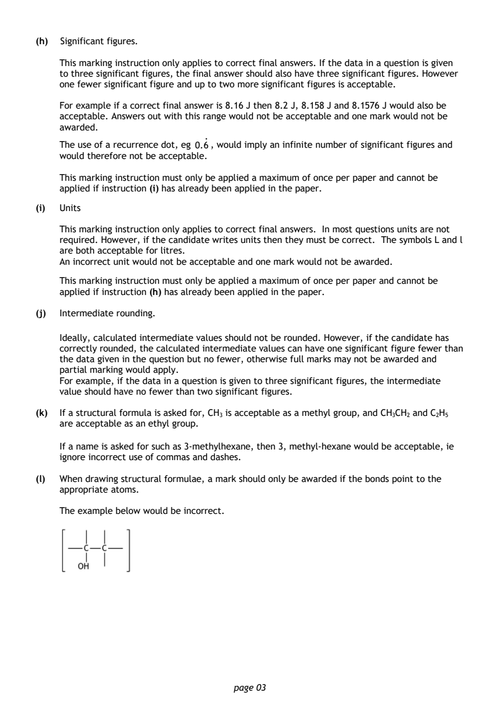
Selectable page text
(h) Significant figures.
This marking instruction only applies to correct final answers. If the data in a question is given
to three significant figures, the final answer should also have three significant figures. However
one fewer significant figure and up to two more significant figures is acceptable.
For example if a correct final answer is 8.16 J then 8.2 J, 8.158 J and 8.1576 J would also be
acceptable. Answers out with this range would not be acceptable and one mark would not be
awarded.
.
The use of a recurrence dot, eg 0.6, would imply an infinite number of significant figures and
would therefore not be acceptable.
This marking instruction must only be applied a maximum of once per paper and cannot be
applied if instruction (i) has already been applied in the paper.
(i) Units
This marking instruction only applies to correct final answers. In most questions units are not
required. However, if the candidate writes units then they must be correct. The symbols L and l
are both acceptable for litres.
An incorrect unit would not be acceptable and one mark would not be awarded.
This marking instruction must only be applied a maximum of once per paper and cannot be
applied if instruction (h) has already been applied in the paper.
(j) Intermediate rounding.
Ideally, calculated intermediate values should not be rounded. However, if the candidate has
correctly rounded, the calculated intermediate values can have one significant figure fewer than
the data given in the question but no fewer, otherwise full marks may not be awarded and
partial marking would apply.
For example, if the data in a question is given to three significant figures, the intermediate
value should have no fewer than two significant figures.
(k) If a structural formula is asked for, CH₃ is acceptable as a methyl group, and CH₃CH₂ and C₂H₅
are acceptable as an ethyl group.
If a name is asked for such as 3-methylhexane, then 3, methyl-hexane would be acceptable, ie
ignore incorrect use of commas and dashes.
(l) When drawing structural formulae, a mark should only be awarded if the bonds point to the
appropriate atoms.
The example below would be incorrect.
page 03PDF page 4
Paper 1, Question 1Paper 1, Question 2Paper 1, Question 3Paper 1, Question 4Paper 1, Question 5Paper 1, Question 6Paper 1, Question 7Paper 1, Question 8Paper 1, Question 9Paper 1, Question 10Paper 1, Question 11Paper 1, Question 12Paper 1, Question 13Paper 1, Question 14Paper 1, Question 15Paper 1, Question 16Paper 1, Question 17Paper 1, Question 18Paper 1, Question 19Paper 1, Question 20Paper 1, Question 21Paper 1, Question 22Paper 1, Question 23Paper 1, Question 24Paper 1, Question 25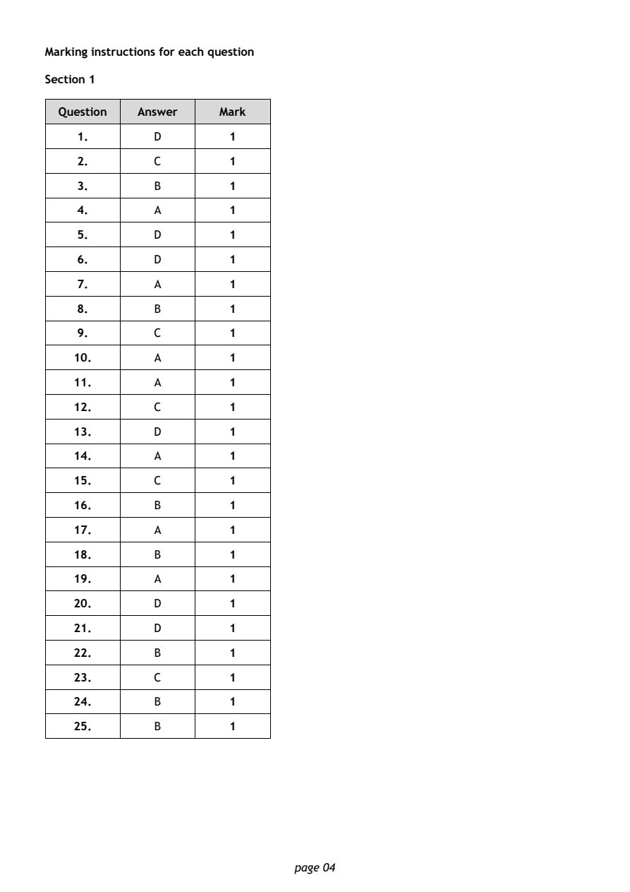
Selectable page text
Marking instructions for each question
Section 1
Question Answer Mark
1. D 1
2. C 1
3. B 1
4. A 1
5. D 1
6. D 1
7. A 1
8. B 1
9. C 1
10. A 1
11. A 1
12. C 1
13. D 1
14. A 1
15. C 1
16. B 1
17. A 1
18. B 1
19. A 1
20. D 1
21. D 1
22. B 1
23. C 1
24. B 1
25. B 1
page 04PDF page 5
Paper 2, Question 1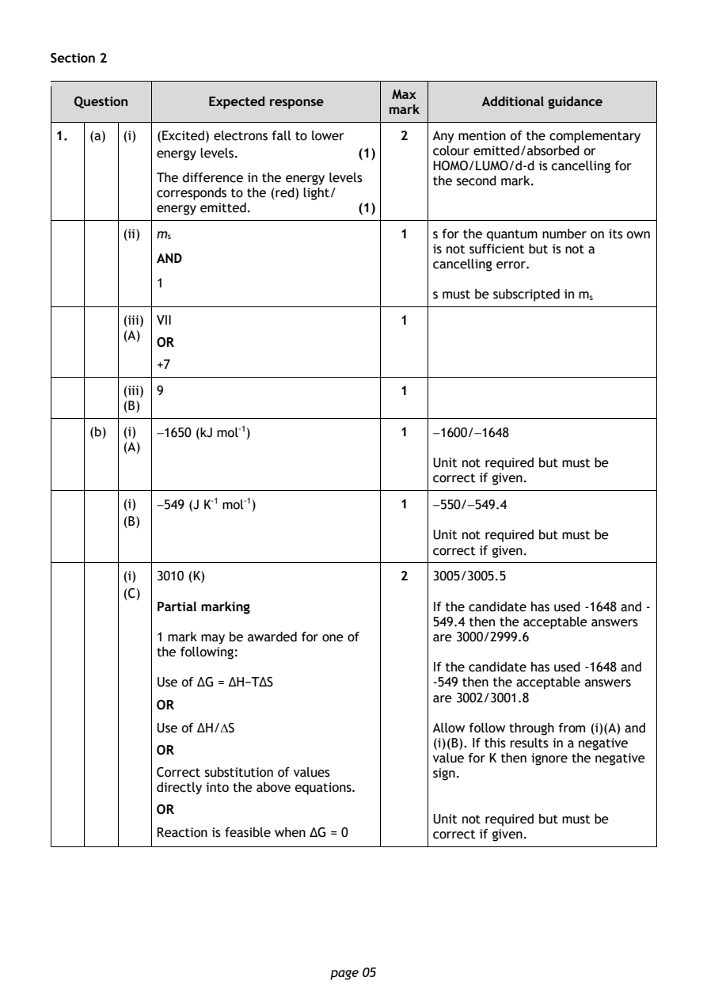
Selectable page text
Section 2
Max
Question Expected response Additional guidance
mark
1. (a) (i) (Excited) electrons fall to lower 2 Any mention of the complementary
energy levels. (1) colour emitted/absorbed or
HOMO/LUMO/d-d is cancelling for
The difference in the energy levels the second mark.
corresponds to the (red) light/
energy emitted. (1)
(ii) m 1 s for the quantum number on its own
s
is not sufficient but is not a
AND
cancelling error.
1
s must be subscripted in m
s
(iii) VII 1
(A)
OR
+7
(iii) 9 1
(B)
(b) (i) −1650 (kJ mol⁻¹) 1 −1600/−1648
(A)
Unit not required but must be
correct if given.
(i) −549 (J K⁻¹ mol⁻¹) 1 −550/−549.4
(B)
Unit not required but must be
correct if given.
(i) 3010 (K) 2 3005/3005.5
(C)
Partial marking If the candidate has used -1648 and -
549.4 then the acceptable answers
1 mark may be awarded for one of are 3000/2999.6
the following:
If the candidate has used -1648 and
Use of ΔG = ΔH−TΔS -549 then the acceptable answers
are 3002/3001.8
OR
Use of ΔH/∆S Allow follow through from (i)(A) and
(i)(B). If this results in a negative
OR
value for K then ignore the negative
Correct substitution of values sign.
directly into the above equations.
OR
Unit not required but must be
Reaction is feasible when ΔG = 0 correct if given.
page 05PDF page 6
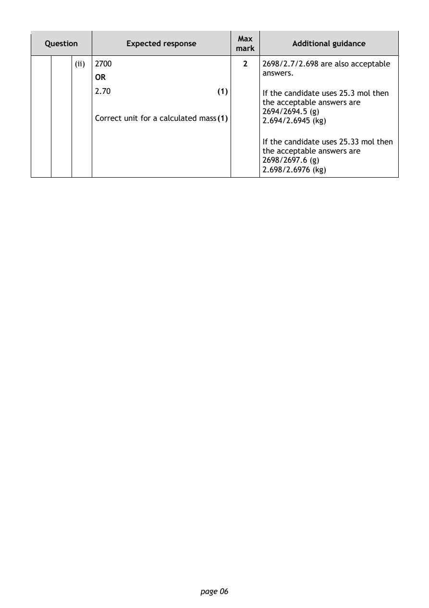
Selectable page text
Max
Question Expected response Additional guidance
mark
(ii) 2700 2 2698/2.7/2.698 are also acceptable
answers.
OR
2.70 (1) If the candidate uses 25.3 mol then
the acceptable answers are
2694/2694.5 (g)
Correct unit for a calculated mass (1)
2.694/2.6945 (kg)
If the candidate uses 25.33 mol then
the acceptable answers are
2698/2697.6 (g)
2.698/2.6976 (kg)
page 06PDF page 7
Paper 2, Question 2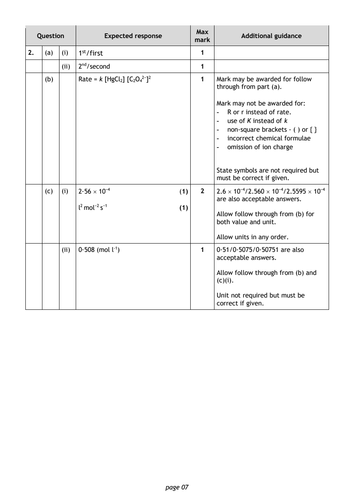
Selectable page text
Max
Question Expected response Additional guidance
mark
2. (a) (i) 1^{s}^{t}/first 1
(ii) 2ⁿ^{d}/second 1
(b) Rate = k [HgCl₂] [C₂O₄²⁻]² 1 Mark may be awarded for follow
through from part (a).
Mark may not be awarded for:
- R or r instead of rate.
- use of K instead of k
- non-square brackets - ( ) or { }
- incorrect chemical formulae
- omission of ion charge
State symbols are not required but
must be correct if given.
(c) (i) 2∙56 × 10⁻⁴ (1) 2 2.6 × 10⁻⁴/2.560 × 10⁻⁴/2.5595 × 10⁻⁴
are also acceptable answers.
l² mol⁻² s⁻¹ (1)
Allow follow through from (b) for
both value and unit.
Allow units in any order.
(ii) 0∙508 (mol l⁻¹) 1 0∙51/0∙5075/0∙50751 are also
acceptable answers.
Allow follow through from (b) and
(c)(i).
Unit not required but must be
correct if given.
page 07PDF page 8
Paper 2, Question 3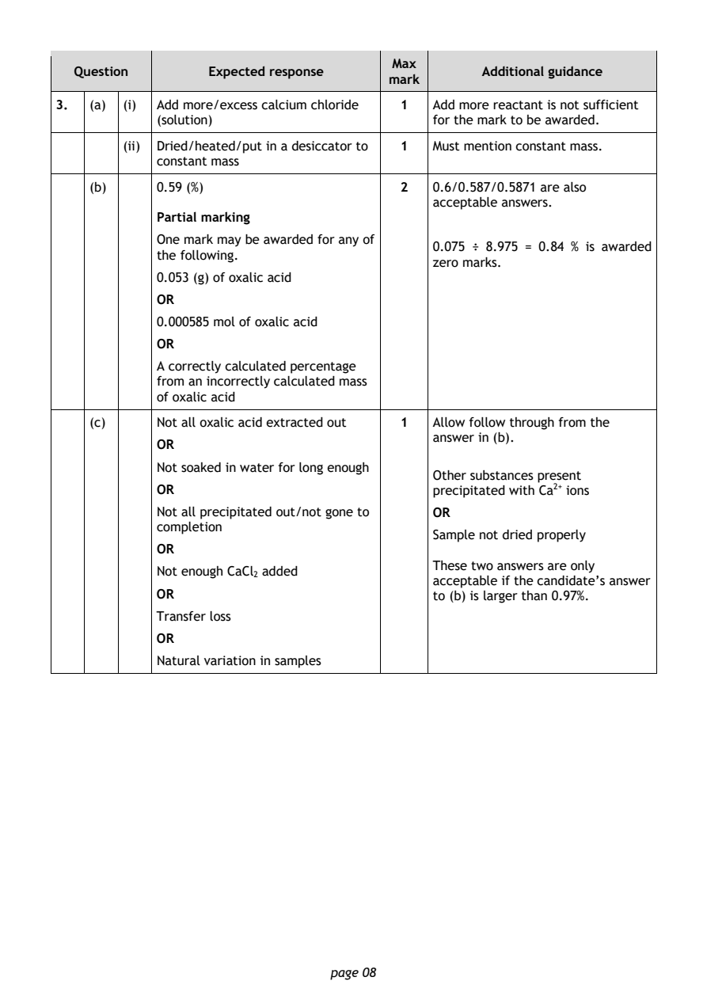
Selectable page text
Max
Question Expected response Additional guidance
mark
3. (a) (i) Add more/excess calcium chloride 1 Add more reactant is not sufficient
(solution) for the mark to be awarded.
(ii) Dried/heated/put in a desiccator to 1 Must mention constant mass.
constant mass
(b) 0.59 (%) 2 0.6/0.587/0.5871 are also
acceptable answers.
Partial marking
One mark may be awarded for any of
0.075 ÷ 8.975 = 0.84 % is awarded
the following.
zero marks.
0.053 (g) of oxalic acid
OR
0.000585 mol of oxalic acid
OR
A correctly calculated percentage
from an incorrectly calculated mass
of oxalic acid
(c) Not all oxalic acid extracted out 1 Allow follow through from the
answer in (b).
OR
Not soaked in water for long enough
Other substances present
OR precipitated with Ca²⁺ ions
Not all precipitated out/not gone to OR
completion
Sample not dried properly
OR
These two answers are only
Not enough CaCl₂ added
acceptable if the candidate’s answer
OR to (b) is larger than 0.97%.
Transfer loss
OR
Natural variation in samples
page 08PDF page 9
Paper 2, Question 4Selectable page text
Max
Question Expected response Additional guidance
mark
4. This is an open-ended question. 3 Zero marks should be awarded if the
student has demonstrated an
1 mark understanding of the chemistry that
The student has demonstrated, at an is below the appropriate level.
appropriate level, a limited
understanding of the chemistry Zero marks should also be awarded if
involved. The student has made the student merely restates the
some statement(s) that is/are chemistry given in the question.
relevant to the situation, showing
that at least a little of the chemistry
within the context is understood.
2 marks
The student has demonstrated, at an
appropriate level, a reasonable
understanding of the chemistry
involved. The student makes some
statement(s) that is/are relevant to
the situation, showing that the
context is understood.
3 marks
The maximum available mark would
be awarded to a student who has
demonstrated, at an appropriate
level, a good understanding, of the
chemistry involved. The student
shows a good comprehension of the
chemistry of the situation and has
provided a logically correct answer
to the question posed. This type of
response might include a statement
of the principles involved, a
relationship or an equation, and the
application of these to respond to
the context. This does not mean the
answer has to be what might be
termed an ‘excellent’ answer or a
‘complete’ one.
page 09PDF page 10
Paper 2, Question 5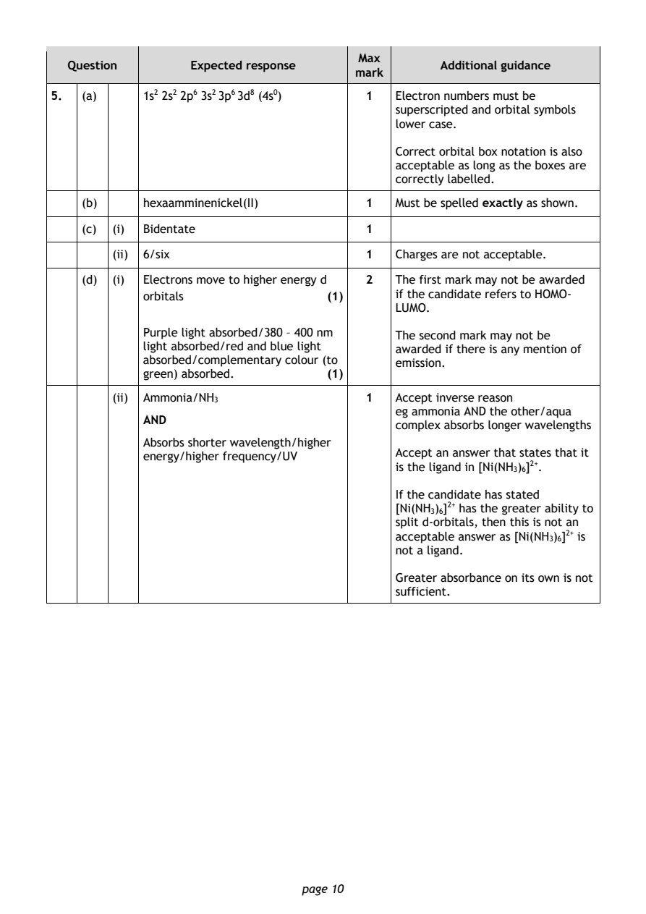
Selectable page text
Max
Question Expected response Additional guidance
mark
5. (a) 1s² 2s² 2p⁶ 3s² 3p⁶ 3d⁸ (4s⁰) 1 Electron numbers must be
superscripted and orbital symbols
lower case.
Correct orbital box notation is also
acceptable as long as the boxes are
correctly labelled.
(b) hexaamminenickel(II) 1 Must be spelled exactly as shown.
(c) (i) Bidentate 1
(ii) 6/six 1 Charges are not acceptable.
(d) (i) Electrons move to higher energy d 2 The first mark may not be awarded
orbitals (1) if the candidate refers to HOMO-
LUMO.
Purple light absorbed/380 – 400 nm The second mark may not be
light absorbed/red and blue light awarded if there is any mention of
absorbed/complementary colour (to emission.
green) absorbed. (1)
(ii) Ammonia/NH₃ 1 Accept inverse reason
eg ammonia AND the other/aqua
AND
complex absorbs longer wavelengths
Absorbs shorter wavelength/higher
Accept an answer that sta₂₊tes that it
energy/higher frequency/UV
is the ligand in [Ni(NH₃) ] .
6
If the cand₂₊idate has stated
[Ni(NH₃) ] has the greater ability to
split d-o⁶rbitals, then this is not a₂₊n
acceptable answer as [Ni(NH₃) ] is
6
not a ligand.
Greater absorbance on its own is not
sufficient.
page 10PDF page 11
Paper 2, Question 6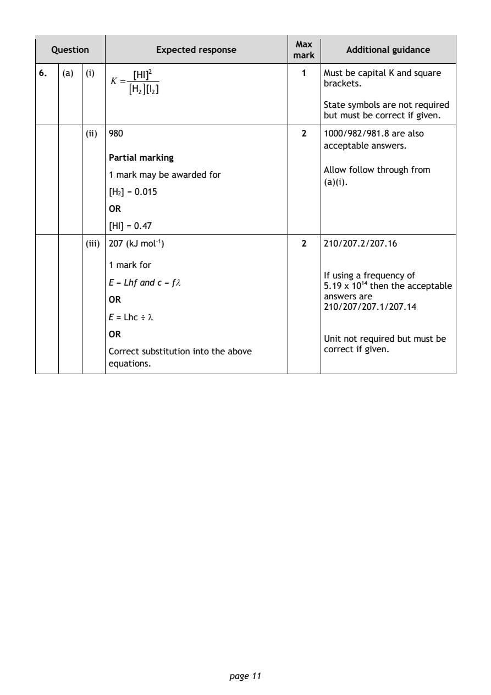
Selectable page text
Max
Question Expected response Additional guidance
mark
6. (a) (i) [HI]² 1 Must be capital K and square
K =
[H₂][I₂] brackets.
State symbols are not required
but must be correct if given.
(ii) 980 2 1000/982/981.8 are also
acceptable answers.
Partial marking
Allow follow through from
1 mark may be awarded for
(a)(i).
[H₂] = 0.015
OR
[HI] = 0.47
(iii) 207 (kJ mol⁻¹) 2 210/207.2/207.16
1 mark for
If using a frequency of
E = Lhf and c = fλ
5.19 x 10¹⁴ then the acceptable
answers are
OR
210/207/207.1/207.14
E = Lhc ÷ λ
OR
Unit not required but must be
Correct substitution into the above correct if given.
equations.
page 11PDF page 12
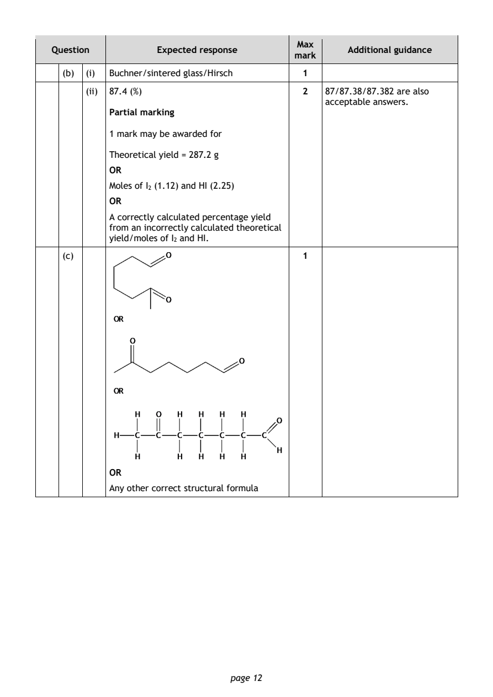
Selectable page text
Max
Question Expected response Additional guidance
mark
(b) (i) Buchner/sintered glass/Hirsch 1
(ii) 87.4 (%) 2 87/87.38/87.382 are also
acceptable answers.
Partial marking
1 mark may be awarded for
Theoretical yield = 287.2 g
OR
Moles of I₂ (1.12) and HI (2.25)
OR
A correctly calculated percentage yield
from an incorrectly calculated theoretical
yield/moles of I₂ and HI.
(c) 1
OR
Any other correct structural formula
page 12PDF page 13
Paper 2, Question 7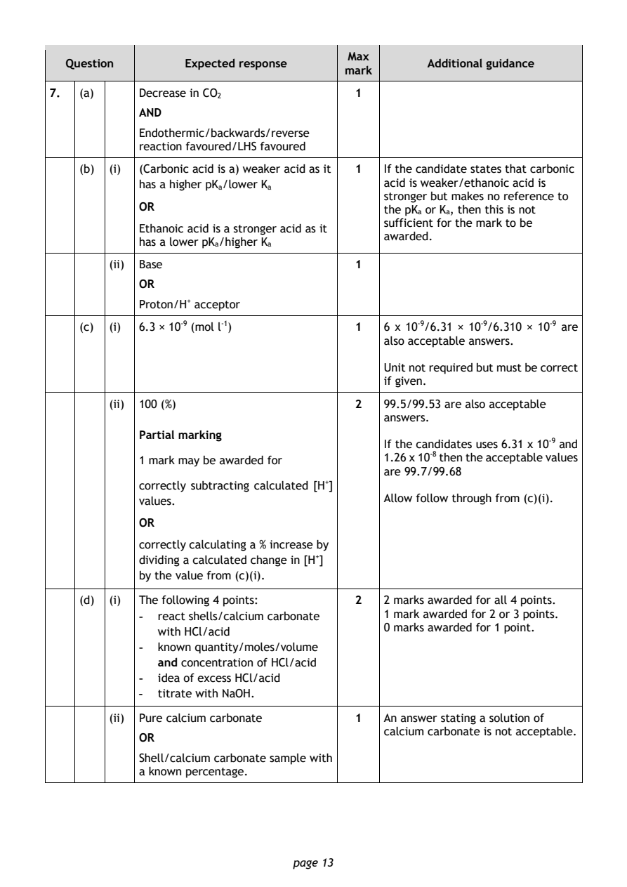
Selectable page text
Max
Question Expected response Additional guidance
mark
7. (a) Decrease in CO₂ 1
AND
Endothermic/backwards/reverse
reaction favoured/LHS favoured
(b) (i) (Carbonic acid is a) weaker acid as it 1 If the candidate states that carbonic
has a higher pK /lower K acid is weaker/ethanoic acid is
a a
stronger but makes no reference to
OR the pK or K , then this is not
sufficie^{a}nt fo^{a}r the mark to be
Ethanoic acid is a stronger acid as it
awarded.
has a lower pK /higher K
a a
(ii) Base 1
OR
Proton/H⁺ acceptor
(c) (i) 6.3 × 10⁻⁹ (mol l⁻¹) 1 6 x 10⁻⁹/6.31 × 10⁻⁹/6.310 × 10⁻⁹ are
also acceptable answers.
Unit not required but must be correct
if given.
(ii) 100 (%) 2 99.5/99.53 are also acceptable
answers.
Partial marking
If the candidates uses 6.31 x 10⁻⁹ and
1 mark may be awarded for 1.26 x 10⁻⁸ then the acceptable values
are 99.7/99.68
correctly subtracting calculated [H⁺]
values. Allow follow through from (c)(i).
OR
correctly calculating a % increase by
dividing a calculated change in [H⁺]
by the value from (c)(i).
(d) (i) The following 4 points: 2 2 marks awarded for all 4 points.
- react shells/calcium carbonate 1 mark awarded for 2 or 3 points.
0 marks awarded for 1 point.
with HCl/acid
- known quantity/moles/volume
and concentration of HCl/acid
- idea of excess HCl/acid
- titrate with NaOH.
(ii) Pure calcium carbonate 1 An answer stating a solution of
calcium carbonate is not acceptable.
OR
Shell/calcium carbonate sample with
a known percentage.
page 13PDF page 14
Paper 2, Question 8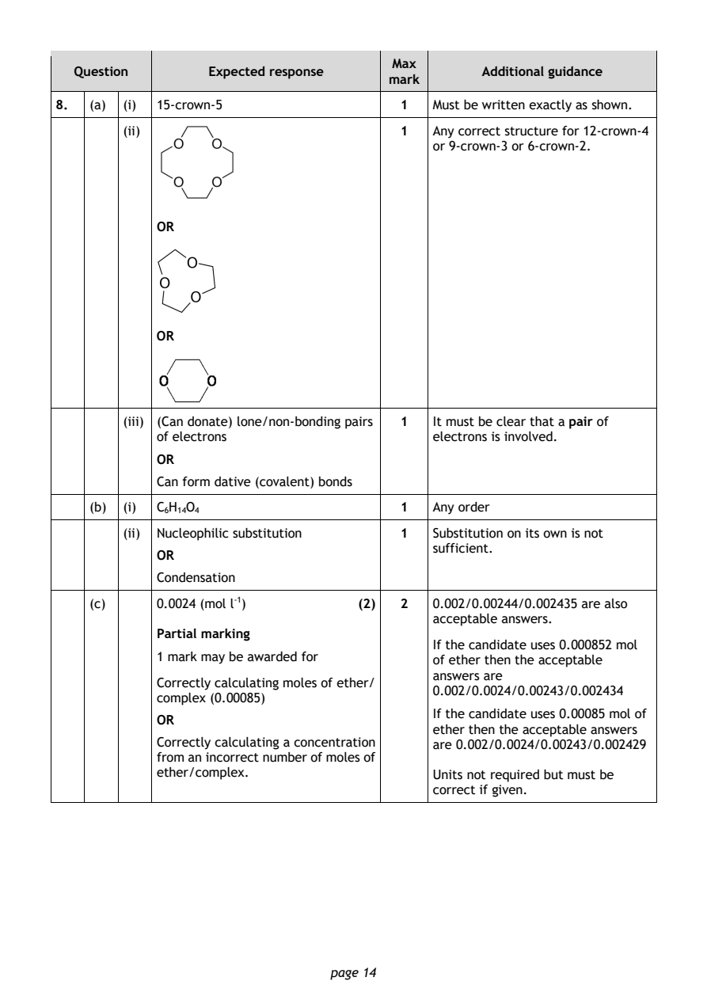
Selectable page text
Max
Question Expected response Additional guidance
mark
8. (a) (i) 15-crown-5 1 Must be written exactly as shown.
(ii) 1 Any correct structure for 12-crown-4
or 9-crown-3 or 6-crown-2.
OR
OR
(iii) (Can donate) lone/non-bonding pairs 1 It must be clear that a pair of
of electrons electrons is involved.
OR
Can form dative (covalent) bonds
(b) (i) C₆H₁ O₄ 1 Any order
4
(ii) Nucleophilic substitution 1 Substitution on its own is not
sufficient.
OR
Condensation
(c) 0.0024 (mol l⁻¹) (2) 2 0.002/0.00244/0.002435 are also
acceptable answers.
Partial marking
If the candidate uses 0.000852 mol
1 mark may be awarded for
of ether then the acceptable
answers are
Correctly calculating moles of ether/
0.002/0.0024/0.00243/0.002434
complex (0.00085)
If the candidate uses 0.00085 mol of
OR
ether then the acceptable answers
Correctly calculating a concentration are 0.002/0.0024/0.00243/0.002429
from an incorrect number of moles of
ether/complex. Units not required but must be
correct if given.
page 14PDF page 15
Paper 2, Question 9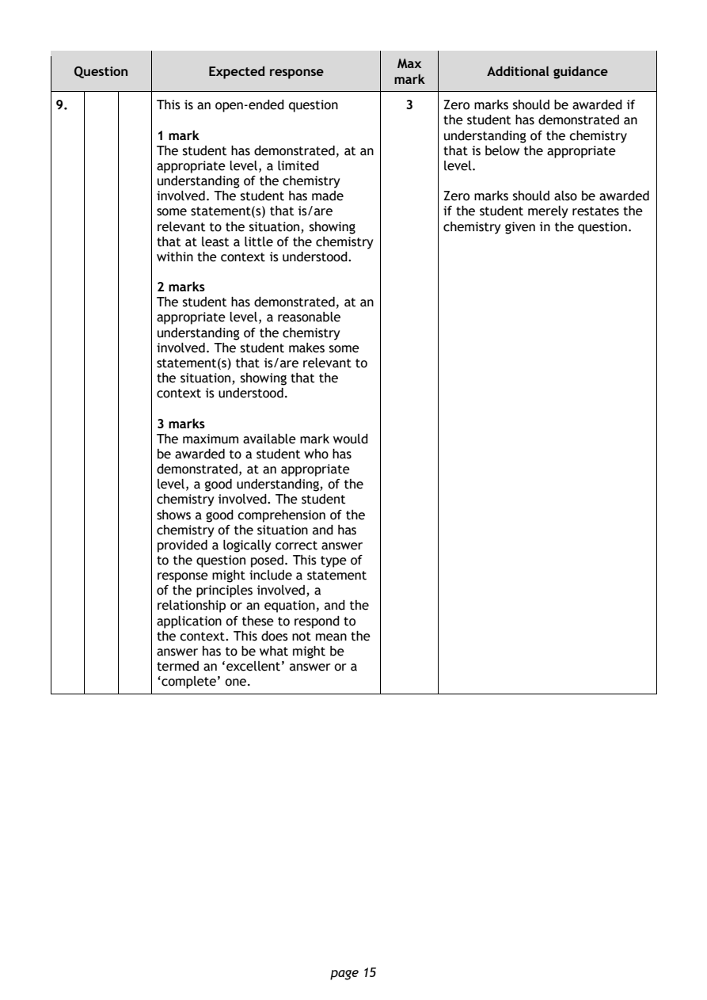
Selectable page text
Max
Question Expected response Additional guidance
mark
9. This is an open-ended question 3 Zero marks should be awarded if
the student has demonstrated an
1 mark understanding of the chemistry
The student has demonstrated, at an that is below the appropriate
appropriate level, a limited level.
understanding of the chemistry
involved. The student has made Zero marks should also be awarded
some statement(s) that is/are if the student merely restates the
relevant to the situation, showing chemistry given in the question.
that at least a little of the chemistry
within the context is understood.
2 marks
The student has demonstrated, at an
appropriate level, a reasonable
understanding of the chemistry
involved. The student makes some
statement(s) that is/are relevant to
the situation, showing that the
context is understood.
3 marks
The maximum available mark would
be awarded to a student who has
demonstrated, at an appropriate
level, a good understanding, of the
chemistry involved. The student
shows a good comprehension of the
chemistry of the situation and has
provided a logically correct answer
to the question posed. This type of
response might include a statement
of the principles involved, a
relationship or an equation, and the
application of these to respond to
the context. This does not mean the
answer has to be what might be
termed an ‘excellent’ answer or a
‘complete’ one.
page 15PDF page 16
Paper 2, Question 10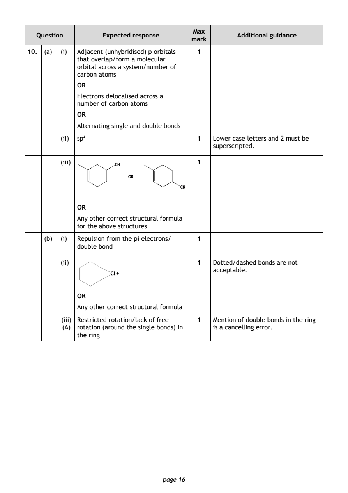
Selectable page text
Max
Question Expected response Additional guidance
mark
10. (a) (i) Adjacent (unhybridised) p orbitals 1
that overlap/form a molecular
orbital across a system/number of
carbon atoms
OR
Electrons delocalised across a
number of carbon atoms
OR
Alternating single and double bonds
(ii) sp² 1 Lower case letters and 2 must be
superscripted.
(iii) 1
OR
Any other correct structural formula
for the above structures.
(b) (i) Repulsion from the pi electrons/ 1
double bond
(ii) 1 Dotted/dashed bonds are not
acceptable.
OR
Any other correct structural formula
(iii) Restricted rotation/lack of free 1 Mention of double bonds in the ring
(A) rotation (around the single bonds) in is a cancelling error.
the ring
page 16PDF page 17
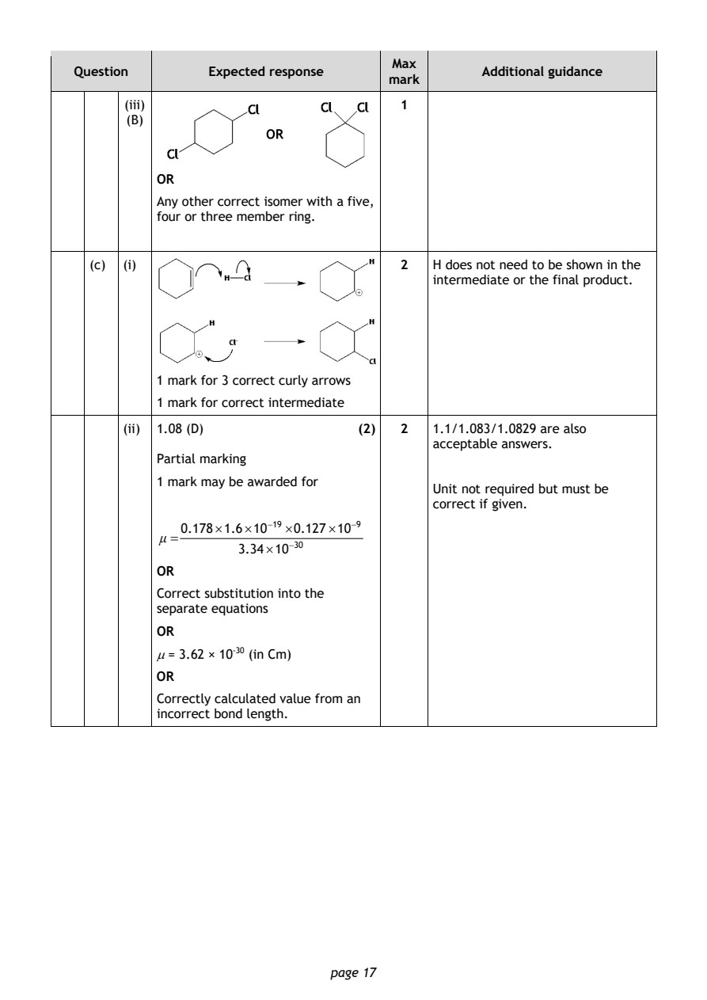
Selectable page text
Max
Question Expected response Additional guidance
mark
(iii) 1
(B)
OR
OR
Any other correct isomer with a five,
four or three member ring.
(c) (i) 2 H does not need to be shown in the
intermediate or the final product.
1 mark for 3 correct curly arrows
1 mark for correct intermediate
(ii) 1.08 (D) (2) 2 1.1/1.083/1.0829 are also
acceptable answers.
Partial marking
1 mark may be awarded for
Unit not required but must be
correct if given.
0.178×1.6×10⁻¹⁹× 0.127×10⁻⁹
μ=
3.34×10⁻³⁰
OR
Correct substitution into the
separate equations
OR
µ = 3.62 × 10⁻³⁰ (in Cm)
OR
Correctly calculated value from an
incorrect bond length.
page 17PDF page 18
Paper 2, Question 11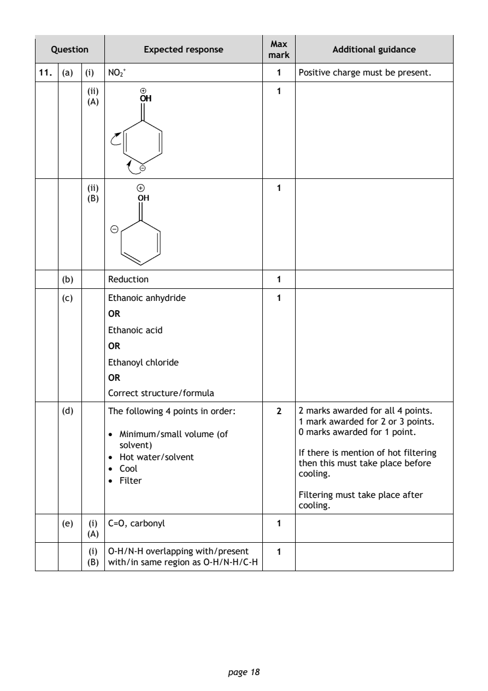
Selectable page text
Max
Question Expected response Additional guidance
mark
11. (a) (i) NO₂⁺ 1 Positive charge must be present.
(ii) 1
(A)
(ii) 1
(B)
(b) Reduction 1
(c) Ethanoic anhydride 1
OR
Ethanoic acid
OR
Ethanoyl chloride
OR
Correct structure/formula
(d) The following 4 points in order: 2 2 marks awarded for all 4 points.
1 mark awarded for 2 or 3 points.
• Minimum/small volume (of 0 marks awarded for 1 point.
solvent)
If there is mention of hot filtering
• Hot water/solvent
then this must take place before
• Cool
cooling.
• Filter
Filtering must take place after
cooling.
(e) (i) C=O, carbonyl 1
(A)
(i) O-H/N-H overlapping with/present 1
(B) with/in same region as O-H/N-H/C-H
page 18PDF page 19
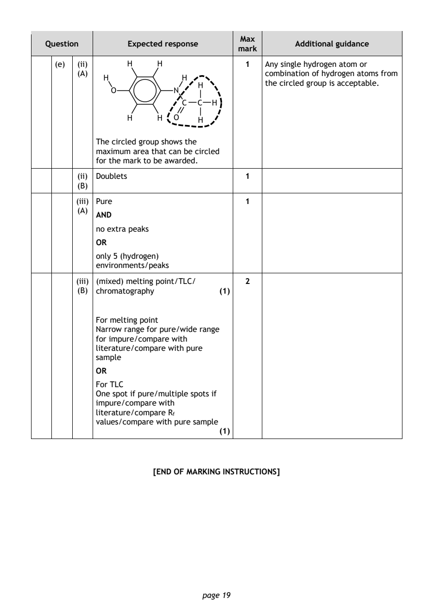
Selectable page text
Max
Question Expected response Additional guidance
mark
(e) (ii) 1 Any single hydrogen atom or
(A) combination of hydrogen atoms from
the circled group is acceptable.
The circled group shows the
maximum area that can be circled
for the mark to be awarded.
(ii) Doublets 1
(B)
(iii) Pure 1
(A)
AND
no extra peaks
OR
only 5 (hydrogen)
environments/peaks
(iii) (mixed) melting point/TLC/ 2
(B) chromatography (1)
For melting point
Narrow range for pure/wide range
for impure/compare with
literature/compare with pure
sample
OR
For TLC
One spot if pure/multiple spots if
impure/compare with
literature/compare R
values/compare with ^{f}pure sample
(1)
[END OF MARKING INSTRUCTIONS]
page 19